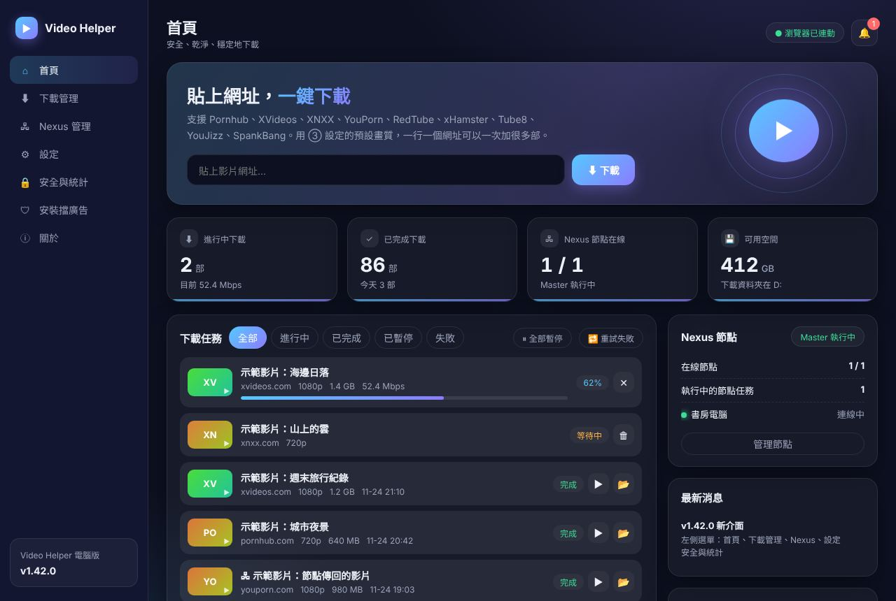
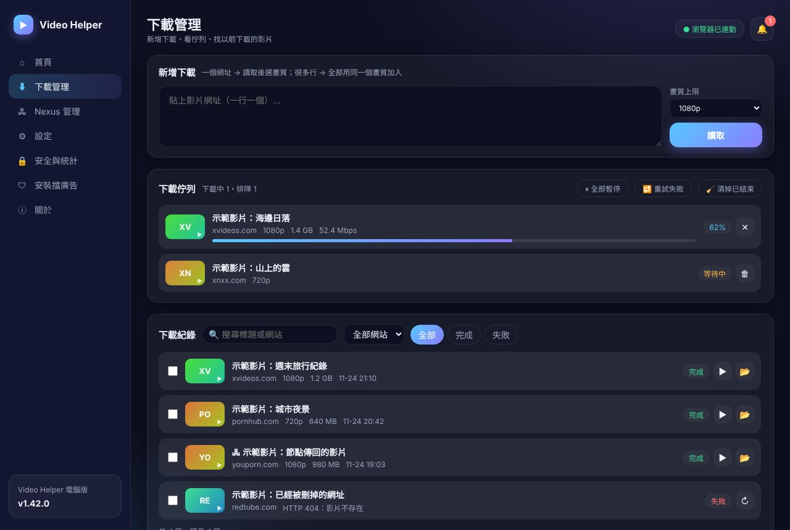
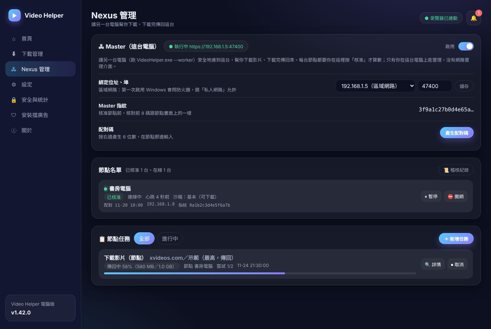
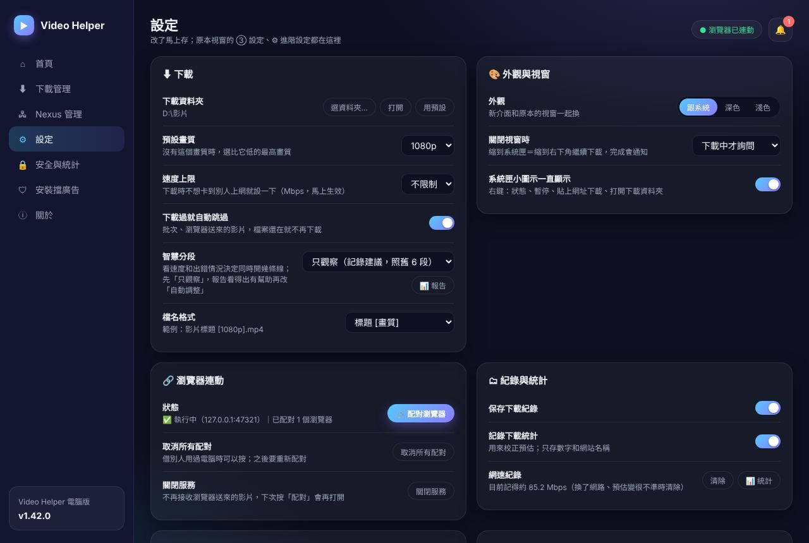
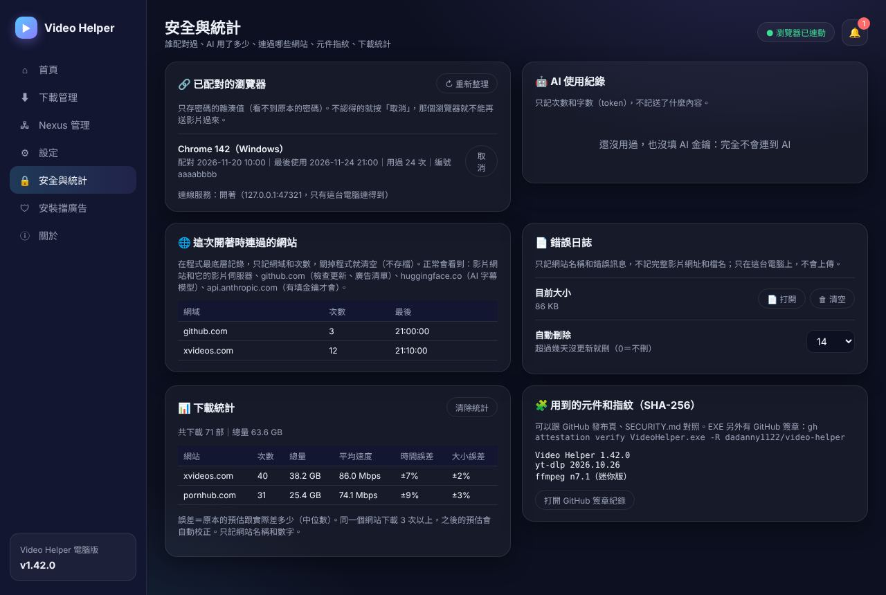
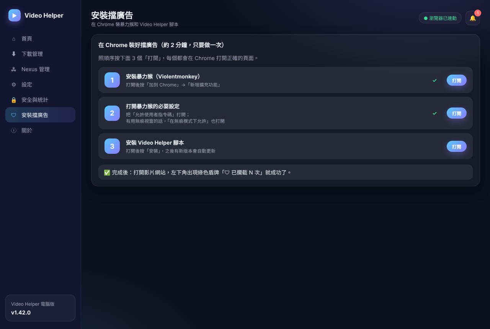

Video Helper 說明書
擋廣告、擋病毒網址、一鍵下載影片的小工具。照順序看完大約 5 分鐘。
1. 這是什麼
Video Helper 由兩個部分組成，可以只裝第一個，也可以兩個一起用：
兩個配對好之後，在網頁上按一個按鈕，影片就會送到電腦版去下載。
支援的網站：Pornhub、XVideos、XNXX、YouPorn、RedTube、xHamster、Tube8、YouJizz、SpankBang 有全部功能。MissAV、Jable、Hanime1 只有擋廣告和預估時間，沒有下載。
其他影片網站（只擋廣告、預估時間）：Eporner、HQporner、Beeg、YourPorn、XMoviesForYou、PornTrex、PornOne、3Movs、PornDig、CumLouder、TXXX、PornDoe。
2. 安裝
方法 A：用電腦版幫你裝（最簡單）
- 到 下載頁 下載 VideoHelper.exe，雙擊執行
- Windows 如果跳出「Windows 已保護您的電腦」，按「其他資訊」→「仍要執行」（因為這個程式沒有花錢買數位簽章，不是病毒）
- 第一次打開會自動到「④ 安裝擋廣告」分頁，照順序按 3 個按鈕：裝暴力猴 → 裝腳本 → 測試
方法 B：只裝瀏覽器的部分
- 在 Chrome 安裝擴充功能 Violentmonkey（暴力猴）
- 到 Greasy Fork 的腳本頁面，按綠色的「安裝此腳本」→ 暴力猴跳出畫面後按「確認安裝」
建議：另外裝一個大社群維護的擋廣告
Video Helper 只有一個人維護，網站改版時可能要幾天才跟上。建議再裝一個由大社群每天更新規則的擋廣告當「基本盤」，兩個一起用不會打架：
- Chrome、Edge：uBlock Origin Lite（原本的 uBlock Origin 已經不能在 Chrome 用了）
- Firefox：uBlock Origin（完整版，擋得最多）
分工：一般廣告、追蹤交給 uBlock；Video Helper 負責各網站專屬的彈窗、影片前廣告、下載、載入時間預估、老闆鍵。
某個網站壞了（抓不到影片、廣告沒擋到）：按盾牌 →「🐞 回報網站壞了」，會打開 GitHub 的回報表單（要有 GitHub 帳號；只附網站名和版本，不會附你看的網址）。沒有帳號就按「🔧 診斷」把資料貼給我。
3. 網頁上的功能
| 你會看到 | 用途 |
|---|---|
| 左下角 🛡 盾牌 | 顯示擋了幾個廣告。點開可以看「最近攔截」、擋了什麼、為什麼擋 |
| 影片旁的預估框 | 目前網速、多久開始播、整部載完要多久，以及播放狀態（載入中／播放中／卡頓） |
| 影片列表上的小標籤 | 每部影片的預估載入時間 |
| 右下角 ⬇ 下載 | 選畫質下載（Pornhub、XVideos、XNXX、YouPorn、RedTube、xHamster、Tube8、YouJizz、SpankBang） |
擋錯了怎麼辦
- 點盾牌 →「⏸ 這個分頁先暫停擋廣告」：只對這個分頁有效，關掉分頁就恢復
- 點盾牌 →「這是誤擋？」：回報給作者修正
- 點盾牌 →「🩺 狀態檢查」：看每個功能有沒有正常
- 點瀏覽器右上角的暴力猴圖示，可以個別開關每個功能
🚨 老闆鍵、分頁偽裝（腳本 v3.19.0 起，預設關閉）
點盾牌 →「⚙ 功能開關」打勾打開：
- 老闆鍵：Esc 快速按兩下 → 影片馬上靜音、暫停，跳到 Google。按「上一頁」不會回到影片。要換成別的網頁：暴力猴圖示 →「🚨 老闆鍵要跳到的網頁…」
- 分頁偽裝：分頁標題變成「未命名文件」、小圖示變成文件圖示，別人瞄到分頁列也看不出來。網站自己改標題也會被改回來
4. 下載影片
按 ⬇ 下載 後，會列出每個畫質的大小和預估時間。每一行有兩種下載方式：
| 做法 | 適合 | 說明 |
|---|---|---|
| 點那一行的文字 | 小檔案、臨時用 | 在瀏覽器裡下載。下載完成前不能關分頁，大檔會吃很多記憶體 |
| 按 🖥 送到電腦版 | 推薦，大檔、高畫質 | 交給電腦版在背景下載，可以關掉網頁，也比較穩 |
第一次用「送到電腦版」：配對（每台電腦只做一次）
- 打開電腦版，到「③ 設定」→「🔗 配對瀏覽器…」，畫面會顯示 6 位數配對碼（5 分鐘內有效）
- 回到影片網頁，按 🖥 送到電腦版，網頁會跳出視窗要你輸入配對碼
- 輸入那 6 位數 → 完成。之後再按就會直接送過去，更新程式也不用重配
之後每次下載
- 電腦版保持開著（縮到右下角系統匣也可以）
- 影片頁按 ⬇ 下載 → 想要的畫質按 🖥 送到電腦版
- 網頁面板會顯示：讀取中 → 排隊中 → 下載中 xx% → ✅ 完成
- 電腦版「② 下載紀錄」→ 雙擊那一筆就會用 Windows 內建播放器播放
5. 電腦版各分頁
| 分頁 | 做什麼 |
|---|---|
| ① 下載影片 | 下載佇列和進度。也可以不經過網頁，直接貼網址 → 讀取 → 選畫質 → 加入下載；一次可貼很多個網址。複製影片網址時，視窗上方會跳出提示。失敗的會出現「↻ 重試」 |
| ② 下載紀錄 | 完成、失敗、取消的紀錄。雙擊播放（失敗的雙擊會重新下載）。選一支影片按「📝 AI 字幕」可以自動產生字幕 |
| ③ 設定 | 下載資料夾、預設畫質、配對瀏覽器 |
| ③ 設定 →「⚙ 進階設定…」 | 平常用不到，出問題或換電腦時再打開：檔名格式、關閉視窗的行為、取消所有配對、🔒 安全、🖧 節點（兩台電腦連線）、📋 節點任務、備份／還原、檢查更新、錯誤日誌、統計 |
| ④ 安裝擋廣告 | 幫你在 Chrome 裝好暴力猴和腳本（第一次打開會自動帶你到這裡） |
⏸ 暫停、速度上限、重複偵測（v1.20.0 起）
- ⏸ 暫停／▶ 繼續：在「① 下載影片」的佇列下面。暫停會保留已下載的部分，按繼續從停下的地方接著下載。結束程式的話，暫停的半成品會被刪掉
- 速度上限：「③ 設定」→「速度上限」選或打一個數字（Mbps），馬上生效。不想卡到家裡其他人上網時用
- 重複偵測：同一支影片下載過會先問你；批次和瀏覽器送來的會自動跳過（「③ 設定」可以關掉）
🏠 首頁（v1.26.0 起）
v1.27.0 起，原本的分頁籤改成右上角的選單：「下載影片」＝① 下載影片、「下載紀錄」＝② 下載紀錄、「設定」＝③ 設定、「擋廣告」＝④ 安裝擋廣告（說明書裡的編號照舊）。
打開程式會先看到首頁：四張大卡片，點一張就進到那個功能。上面的「⌂ 首頁」可以隨時回來；不想要的話，「③ 設定」取消「打開時先顯示首頁」。
🎨 外觀（v1.25.0 起）
介面換成 Windows 11 風格。「③ 設定」→「外觀」可以選 跟系統、深色、淺色（有些文字顏色要重新打開程式才會全部換好）。
右下角小圖示（v1.35.0 起）：打開電腦版，右下角系統匣（工作列的「^」裡面）就會有 Video Helper 的小圖示。點兩下打開視窗；按右鍵有：目前下載狀態、⏸ 暫停／▶ 繼續全部下載、📋 貼上網址下載（先複製影片網址，按一下就用預設畫質加入）、📂 打開下載資料夾、結束。不想要可以在「③ 設定」取消「右下角系統匣一直顯示小圖示」。想讓它一直顯示在工作列上、不藏在「^」裡：在「^」裡把它拖到工作列上就好。
🖥 新介面導覽（v1.42.0 起只用新介面）
打開電腦版就是新介面，左邊選單切換各頁。說明書其他地方寫的 ①②③④ 是以前視窗的分頁，對照：① 下載影片、② 下載紀錄＝「下載管理」，③ 設定＝「設定」，④ 安裝擋廣告＝「安裝擋廣告」，「⚙ 進階設定」裡的節點、安全、統計＝「Nexus 管理」「安全與統計」。新介面要用 Windows 的 WebView2（Windows 11 都有，Windows 10 大多也有）；沒有的話會自動用以前的視窗。圖裡是示範資料。






English / 語言（v1.44.0 起）：「設定 → 外觀與視窗 → 語言」可以選「跟系統」（Windows 是中文就用中文、其他用英文）、「繁體中文」或「English」，選了馬上換，不用重開。系統匣選單、Windows 通知、配對和 AI 字幕的小視窗也會跟著換；更新紀錄和以前的視窗（--classic）只有中文。v1.45.0 起節點小視窗（--worker）也跟著 Windows 語言，小視窗上的「🌐 English／🌐 中文」可以換（下次打開節點生效）。
瀏覽器腳本的語言（v3.23.0 起）：瀏覽器是中文就用中文、其他用英文；想換的話按左下角盾牌 → 最下面「🌐 English／🌐 中文」，或暴力猴選單裡的同一個按鈕（網頁會重新整理）。只翻腳本自己的面板，網頁本身不會被改。
救急：新介面真的打不開又需要用的時候，可以用「命令提示字元」執行 VideoHelper.exe --classic 開以前的視窗。
拖動視窗比較順（v1.34.0 起，預設開）：Windows 拖動視窗時會一直重畫裡面的按鈕、框框，這套風格的元件都是圖片，重畫很慢，所以 ①～④ 拖起來會卡（首頁是一整張圖所以很順）。現在拖動時會先拍一張畫面照片蓋上去，放開就換回來；拖動那一下畫面不會更新（例如下載進度停一下），放開就恢復。覺得怪可以在「③ 設定」取消「拖動視窗時比較順」。
🧠 智慧分段（v1.24.0 起）
下載 MP4 時，程式會同時開好幾條線一起抓（預設 6 條）。網路不穩時，開太多條反而一直出錯。「③ 設定」→「智慧分段」有三種：
- 只觀察（預設）：照舊 6 條，但會記下「如果是自動，會改成幾條、為什麼」
- 自動調整：看上一部的狀況決定下一部開幾條（1／2／4／6）。一直出錯就減少；連續穩定一陣子再慢慢加回去。正在下載的那部不會被改
- 關閉：永遠 6 條
按旁邊的「📊 報告」可以比較兩種模式的成功率、平均速度、重試次數。建議先用「只觀察」，報告看得出有幫助再改「自動調整」。
另外，某個網站說「太頻繁了（429）」時，只有那個網站會先停一下，排在後面的其他網站影片照常下載；要好幾個不同網站同時出錯，才會判斷成「你的網路有問題」。
🔁 失敗自動處理（v1.22.0 起）
下載失敗時程式會自己判斷：
- 🔁 等重試：網站太忙（429）、伺服器出錯、斷線 → 自動等一下再試，最多 3 次，佇列裡看得到倒數
- ✋ 需要處理：影片被移除、網站拒絕、網址錯 → 重試也沒用，會告訴你該檢查什麼；處理完按「↻ 重試失敗的」
- 💾 硬碟滿了：佇列自動暫停、已完成的保留；清出空間後按「▶ 繼續」
🖧 節點：兩台電腦連線（v1.29.0 起，第一版）
讓家裡另一台電腦當「節點」，安全地連到你主要用的這台（Master）。這一版只做連線、核准、心跳、撤銷，還不會把下載工作丟給節點——先把「誰可以連進來」做對，之後的功能才站得穩。兩台要在同一個區域網路（或 Tailscale 這類 VPN），不支援從外網連。
- Master 那台（平常下載的這台）：③ 設定 →「⚙ 進階設定…」→「🖧 節點」→ 勾「啟用 Master」。綁定位址選「區域網路」那個（例如 192.168.x.x）；Windows 問防火牆時選「私人網路」允許。
- 按「產生配對碼」，會出現 6 位數（5 分鐘內有效、只能用一次）。記下畫面上的「Master 指紋」前 8 碼。
- 節點那台：把同一個
VideoHelper.exe建一個捷徑，目標最後面加上--worker（或在命令提示字元輸入VideoHelper.exe --worker）。會開一個小視窗：填 Master 位址（https://192.168.x.x:47331）、這台的名字、配對碼 → 按「配對」。 - 節點畫面會顯示「Master 指紋」——跟 Master 那邊的前 8 碼一樣才繼續，不一樣就是連錯台（或有人冒充），不要核准。
- 回到 Master 的「🖧 節點」，名單出現「等待核准」的那台 → 選它 → 「✔ 核准」→ 填理由。之後節點顯示「已連線（心跳正常）」就成功了。
管理：暫停（立刻斷線，恢復前拒絕）、恢復、撤銷（不能復原：連線立刻切斷、憑證永久作廢，要再用得重新配對）；每個動作都會記在「📜 稽核紀錄」。節點的憑證 90 天有效、到期前會自動更新；Master 關掉或取消「啟用」時，所有節點都會斷線。節點模式不會讀你的下載設定、下載紀錄、AI 金鑰，也不會碰瀏覽器配對——它有自己的設定和日誌（%APPDATA%\VideoHelper\nexus\worker\）。
📋 節點任務（v1.30.0 起；v1.31.0 起可以叫節點下載影片）
節點連上之後，可以在「⚙ 進階設定 →📋 節點任務」派任務給它們，看 Master 怎麼挑節點、節點怎麼執行、怎麼取消。
⬇ 下載影片（節點）（v1.31.0 起）
叫節點那台電腦下載影片。v1.33.0 起可以勾「下載完傳回這台」（預設有勾，見下面「↩ 傳回這台」）；不勾的話檔案留在節點那台。只支援能下載的 9 個網站（Pornhub、XVideos、XNXX、YouPorn、RedTube、xHamster、Tube8、YouJizz、SpankBang）；只擋廣告的網站會直接被拒絕。Pornhub 會擋「不是瀏覽器的程式」開網頁，所以在電腦版貼 Pornhub 網址給節點會失敗；請改用下面的「🖧 交給節點」。
🖧 交給節點（v1.32.0／腳本 v3.22.0 起）：在影片頁按「⬇ 下載」→ 每個畫質旁邊有「🖧 交給節點」→ 按下去，瀏覽器會把影片真正的位址交給電腦版、派給節點下載（Pornhub 也可以）。電腦版要開著 Master；影片位址有時效，30 分鐘內沒派出去就過期，重按一次就好。不用每次都開節點：節點小視窗開著就會一直接任務；只有一台電腦時開的 a／b 兩個捷徑只是測試用。
- 兩邊都更新到 v1.31.0（新版節點配舊版 Master 會派不到任務）
- 到「🖧 節點」看那台的「沙箱」欄要是「基本（可下載）」；寫「不能用」的節點不會被派下載任務，後面會寫原因
- 節點小視窗可以改「下載資料夾」（預設是「下載\VideoHelper 節點」）和「同時下載 1／2 部」
- 「📋 節點任務」按「＋ 新增任務」→ 類型選「下載影片（節點）」→ 貼影片網址、選畫質 → 送出
- 列表會顯示進度；完成後選那一列按「🔍 詳情與排程理由」，最上面會寫檔名、大小、存在哪台的哪個資料夾
沙箱是什麼、擋什麼：節點下載時，會在一個「沙箱」子程序裡跑——限制記憶體（2 GB）、CPU（50%）、程序數、時間（2 小時）、檔案大小（8 GB）；拿不到你的設定、金鑰、瀏覽器 Cookie；只能連支援的網站，連不到家裡的內網；取消或當掉時整組程序一起結束、暫存資料夾刪乾淨。老實說：這是「程序限制＋程式自己檢查」的基本隔離，不是完全隔離——它擋得住寫壞的程式或惡意網址，擋不住同一個 Windows 帳號下的惡意程式。
↩ 傳回這台（v1.33.0 起）
勾了「下載完傳回這台」的任務，節點下載完會自己把影片傳回你這台，放進 ① 下載影片 用的同一個下載資料夾，也會出現在 ② 下載紀錄（標題前面有 🖧）。瀏覽器「🖧 交給節點」送的也一樣會傳回。
- 怎麼傳：切成每段 8 MB，每段都比對 SHA-256 指紋；全部收齊後再比對整個檔案的指紋，完全一樣才放進下載資料夾、任務才算「成功」。沒傳完的半成品放在別的地方，不會出現在下載資料夾。
- 斷線、關機：節點關掉、網路斷了、這台重開都沒關係，下次連上會從缺的那段接著傳，不會從頭來。傳回中的任務不會因為節點離線變成「狀態不明」。
- 這台空間不夠：先不傳（列表寫「傳回中（這台空間不夠…）」），影片還在節點上；清出空間後 5 分鐘內自動繼續。
- 傳不回來：24 小時都沒進展就改成「傳回失敗（檔案留在節點）」，詳情會寫在哪台的哪裡；選它按「↩ 重新傳回」，節點上線就接著傳。
- 節點那份：這台確認收到、指紋對了，節點才刪自己那份。節點小視窗可以勾「傳回 Master 之後，這台也留一份」。
- 速度：照「③ 設定」的下載限速（沒設就不限）。
- 兩邊都要更新到 v1.33.0；舊版節點不會被派到要傳回的任務（排程理由會寫「節點版本太舊，不能把檔案傳回這台」）。
老實說：指紋比對保證「收到的跟節點送的一模一樣」，不保證影片本身安全；來源一樣只限支援的 9 個網站。只有一台電腦時，用 a／b 兩個節點測得了，但傳回只是在同一顆硬碟上再存一份。
下載失敗時詳情會寫原因：網站太忙（429）、網路不穩會自動重試；影片被移除、網站不在清單、空間不夠、檔案太大重試也沒用，不會重試。
🧪 測試任務
四種無害的測試任務，用來確認派送、取消、重試、傳回都正常：
- 回聲：節點把你打的字傳回來，Master 自己核對內容和雜湊
- 等待：節點等 N 秒、每秒回報進度（拿來測取消、逾時）
- 故意失敗：測「失敗會不會自動重試」——「ADAPTER_ERROR」會重試，另外兩種不會
- 測試檔（測傳回）（v1.33.0）：節點在下載資料夾寫一個 N MB 的假檔案（不連網），勾「寫完傳回這台」就能測傳回、斷線接著傳；傳回來的檔名是
nexus-test-….mp4，不能播放，測完可以刪
- 先照上面「🖧 節點」把至少一台節點核准好，節點小視窗勾「接收 Master 派來的任務」（預設有勾）
- 到「📋 節點任務」按「＋ 新增任務」→ 選類型、填內容 → 送出
- 列表會從「排隊中 → 已選節點 → 已派出 → 執行中 → 成功」一路變；選一列按「🔍 詳情與排程理由」可以看為什麼選這台（每台的分數、被排除的原因）和每一步的時間軸
- 執行中按「⏹ 取消」→ 先變「取消中…」，節點確認停下才變「已取消」
同一台電腦開兩個節點（沒有第二台電腦也能測「分給不同節點」）：再建一個捷徑，目標最後面加 --worker --profile b（profile 名稱只能英數、- 和 _）。每個 profile 是完全獨立的節點：自己的身分、設定、日誌（資料夾 nexus\worker-b\），兩個都要各自配對、核准。同一個 profile 不能同時開兩次。
狀態不明（節點失聯）：節點已經接下任務後離線或被撤銷，Master 不知道它到底跑完沒，會停在這個狀態、不會自動重跑。確認節點真的沒在跑之後，按「✘ 標記失敗」並填理由。
🔒 安全（v1.19.0 起）
「⚙ 進階設定…」→「🔒 安全」可以看到：已配對的瀏覽器（不認得的按「取消」）、AI 用了幾次、這次連過哪些網站、錯誤日誌（可以清空、設定幾天自動刪）、用到的元件和指紋。詳細說明在 SECURITY.md。
📝 AI 字幕（v1.18.0 起）
- 「② 下載紀錄」點一下已下載好的影片 → 按「📝 AI 字幕」
- 選影片說的語言（不確定就選「自動偵測」）和模型：快＝一般電腦夠用；準＝比較準但慢 2～3 倍
- 想要中文：勾「翻成繁體中文」（要先在「⚙ 進階設定…」填 AI 金鑰）→ 按「開始」
- 做好後，字幕存在影片旁邊。用 VLC 或 PotPlayer 打開影片就會自動顯示
v1.21.0 起：按住 Ctrl 或 Shift 可以一次選很多部影片，一部接一部做（可以勾「已經有字幕的跳過」）。字幕格式可以選 SRT、VTT 或兩種都要；翻中文時還可以另外做一份 「中文＋原文」雙語字幕（檔名是「影片.雙語.srt」，在播放器的字幕選單切換）。
🧩 隱私與自動化（v1.48.0 起）
都在「設定」頁的「🧩 隱私與自動化」卡片：
- 🔒 密碼鎖：按「設定密碼」輸入 4～12 位數字。之後打開電腦版、閒置太久（預設 15 分鐘）、縮到系統匣都會鎖住，右上角 🔒 也可以馬上鎖。鎖住時看不到標題、下載紀錄、縮圖、通知，下載照常繼續。連錯 5 次要等 30 秒。這是防別人順手打開，不是加密：影片檔還是在資料夾裡。忘記密碼：關掉電腦版，用記事本打開
%APPDATA%\VideoHelper\settings.json，刪掉lock_pin那一行。 - ⭐ 稍後下載：在影片網站的下載面板按「⭐ 稍後下載」，影片會記在電腦版「下載管理」頁的清單裡，晚點按「⬇ 全部下載」。Pornhub 這種擋程式的網站，會用瀏覽器打開那一頁、腳本自動送過來（一次最多 5 頁）。
- 🌙 定時下載：「只在時段內下載」＝例如 1:00～7:00 才下載，時段結束時正在下載的會暫停、時段開始自動接著下載；「時段內全速、其他時間限速」＝白天限速 2～20 Mbps。上方的 🌙 按一下可以「▶ 現在就下載」這一批。
- 🗂 自動整理資料夾：新下載的影片放進「下載資料夾\網站\」或「下載資料夾\網站\2026-11\」，舊檔不會搬。「下載管理」→「🧹 找重複」會找出同一部影片下載了好幾個檔案的，預設保留畫質最高的，其他的丟到資源回收筒（可以救回）。
- 📱 下載完成通知手機：在你自己的 Discord 伺服器開一個頻道 → 頻道設定 →「整合」→「Webhook」→「新 Webhook」→ 複製網址，貼到電腦版按「儲存」、再按「傳一則測試」。之後佇列全部做完時，手機 Discord 會收到「✅ 下載完成 3 部，共 2.1 GB」，不會寫標題。
6. 更新
- 腳本：暴力猴每天自動檢查。想馬上更新：暴力猴管理頁 → Video Helper 那一行按 🔄
- 電腦版（v1.47.0 起一鍵更新）：有新版時首頁「最新消息」最上面會出現「⬆ 更新到 vX.Y.Z」，按下去程式會自己下載、核對（檔案指紋要跟發布頁一樣、GitHub 要有這個檔案的打包簽章紀錄、元件清單也要對得上），全部過了才換成新版並重新開啟；新版 60 秒內沒正常打開就自動換回舊版。有影片在下載時會先問你要不要等下載完。設定、紀錄、配對都會保留
- 想讓它有新版時先在背景下載好：設定頁勾「有新版時先在背景下載好」（下載好還是要你按才換）
- EXE 放在
C:\Program Files這種不能寫入的資料夾，或節點那台（--worker），不會自動換：照舊到 下載頁 下載新的 EXE，關掉舊的、打開新的
- 兩邊最好都保持最新版，有些功能要兩邊一起更新才能用
- 想退回舊版：到 所有版本 下載舊的 EXE 換回去就好，設定和下載紀錄都能用。例外是 Nexus 節點：新版會把節點資料庫升級，舊版讀不了（會說「資料庫版本比程式新」）；真的要退回 v1.32 以前，要先把
%APPDATA%\VideoHelper\nexus資料夾改名備份、重新配對節點 - 每一版用了哪些元件：v1.46.0 起每次發布都附
components.lock.json，列出電腦版、瀏覽器腳本、Nexus、ffmpeg、AI 字幕程式和模型、Python 套件的版本和 SHA-256（跟 EXE 一起由 GitHub 簽章；只有版本和指紋，沒有任何金鑰或個人資料）。「🔒 安全與統計」的元件清單可以拿來對照
7. 常見問題
這個工具全部在你自己的電腦上跑，沒有伺服器，所以不會有「伺服器掛了」這種問題。會遇到的幾乎都是下面這幾種，越前面越常見：
最常遇到的
1. 網站改版後，突然有廣告或不能下載
這是最常見的。Pornhub、XVideos 大約幾個月會改一次網頁，腳本認不得新寫法就會漏掉廣告，或抓不到影片。- 先更新：暴力猴管理頁 → Video Helper 按 🔄；電腦版也更新到最新
- 還是不行：按 F12 →「Console」，把紀錄複製下來，加上網站名稱回報給作者
- 有新版時，Discord 的 #進度 頻道會自動通知
2. 下載失敗（尤其是網頁開很久之後）
影片的下載網址有時效，網頁開了很久才按下載，網址可能已經過期。- 重新整理影片頁，再按一次「🖥 送到電腦版」
- 網路斷線造成的：在「① 下載影片」按「↻ 重試失敗的」
- 出現 HTTP Error 410 或 403：代表網站擋了程式。從網頁按「送到電腦版」，不要直接在電腦版貼網址
3. 網頁顯示「找不到電腦版」
- 電腦版沒打開，或被你完全關掉了（縮到右下角系統匣是可以的）
- 打開電腦版，看「③ 設定」的瀏覽器連動是不是「✅ 執行中」
4. 新的廣告網站跑出來
廣告商會換新的網域。點盾牌 →「🔍 檢查」，紅字的確認後按「封鎖」，重新整理網頁就生效。網站自己的影片伺服器（綠字，例如 phncdn.com）不要封鎖。第一次安裝時常見的
5. 盾牌沒出現（腳本沒有在跑）
- 點瀏覽器右上角的暴力猴圖示，確認它是打開的、Video Helper 有勾起來
- Chrome 新版要多開一個開關：網址列輸入
chrome://extensions→ 暴力猴的「詳細資料」→ 打開「允許使用者指令碼」（有些版本要先打開右上角的「開發人員模式」） - 改完重新整理網頁
6. 無痕模式沒有擋廣告
擴充功能預設不會在無痕模式執行。chrome://extensions → 暴力猴的「詳細資料」→ 打開「在無痕模式中啟用」。7. Windows 或防毒軟體說 VideoHelper.exe 有風險
因為這個程式沒有花錢買數位簽章，Windows 和部分防毒軟體看到「沒見過的程式」就會先警告。- Windows 跳「已保護您的電腦」：按「其他資訊」→「仍要執行」
- 只從 官方下載頁 下載，別人傳給你的檔案不要用
- 程式碼全部公開，EXE 是 GitHub 自動打包的，不是手動上傳的
8. 網頁又要我輸入配對碼
換了瀏覽器、清除了暴力猴資料，或在電腦版的進階設定按過「取消所有配對」。照「4. 下載影片」的配對步驟重做一次就好。其他
下載的影片 Windows 播放器打不開
- 先確認檔名最後是 .mp4（檔案總管 →「檢視」→ 勾選「副檔名」）。沒有就自己改名加上 .mp4
- 用「送到電腦版」下載的檔案最穩，建議優先用這個
- 真的不行可以裝 VLC 播放器，什麼格式都能播
下載速度很慢
電腦版會把 MP4 分成 6 段同時下載。還是慢的話，通常是網站那邊限速，或你同時在看別的影片分掉網速。硬碟快滿了
1080p 影片一部常常 1～3 GB。在「② 下載紀錄」按「打開下載資料夾」，把看完的刪掉；或在「③ 設定」把下載資料夾改到空間比較大的硬碟。MissAV、Jable、Hanime1 為什麼不能下載
這幾個網站的影片多半是未經授權轉載的商業作品，所以本工具只提供擋廣告，不提供下載。🔍「檢查是不是廣告」要錢嗎？
不用。電腦版用免費的公開廣告清單（約 7 萬個已知廣告、追蹤、惡意網址）在你自己的電腦比對，不會送資料出去。清單第一次會自動下載（約 2 MB），之後 7 天更新一次。清單查不到的會顯示「不確定」；想讓 AI 再幫忙判斷，可以在「③ 設定」→「⚙ 進階設定…」→「廣告判斷」貼上 Anthropic 的 API 金鑰（要付費，選用）。回報問題時請附上
- 哪個網站、哪一部影片（網址）
- 發生什麼事：截圖最清楚
- 廣告沒擋到：按 F12 →「Console」的紀錄
- 電腦版出錯：「③ 設定」→「⚙ 進階設定…」→「問題排查」→「📄 打開錯誤日誌」的內容
8. 安全與隱私
- 腳本只在支援的網站上執行，不會讀其他網站
- 電腦版的連動只聽自己這台電腦（127.0.0.1），網路上的其他人連不進來；還要配對過才收
- 電腦版只接受支援下載的網站（Pornhub、XVideos、XNXX、YouPorn、RedTube、xHamster、Tube8、YouJizz、SpankBang）的影片網址和它們自己的影片伺服器
- 不會上傳你的觀看紀錄。統計只記網站名稱和數字，不記標題和網址，而且可以關掉
- 程式碼全部公開在 GitHub，誰都可以檢查